Infografía interactiva
“El infierno del mar” — José Emilio Pacheco. El poema denuncia cómo la contaminación del océano afecta la naturaleza y también la vida humana.
Contexto del poema
Breve info del autor • situación social/ambiental • problema ecológico central
Breve información del autor
José Emilio Pacheco (1939–2014) fue un poeta, narrador y ensayista mexicano. Es considerado una de las figuras más importantes de la literatura mexicana contemporánea. Recibió numerosos reconocimientos por su aporte al pensamiento cultural de México.
Situación social y ambiental relacionada
El crecimiento industrial y los residuos humanos han aumentado la contaminación del mar por químicos, petróleo y basura.
Problema ecológico central
El poema denuncia la contaminación del mar por sustancias tóxicas que dañan la vida marina y también afectan a las personas.
El poema presenta al mar como víctima de la acción humana.
La contaminación no afecta solo al agua, sino también a los animales y a las personas.
La denuncia ecológica también es una denuncia social.
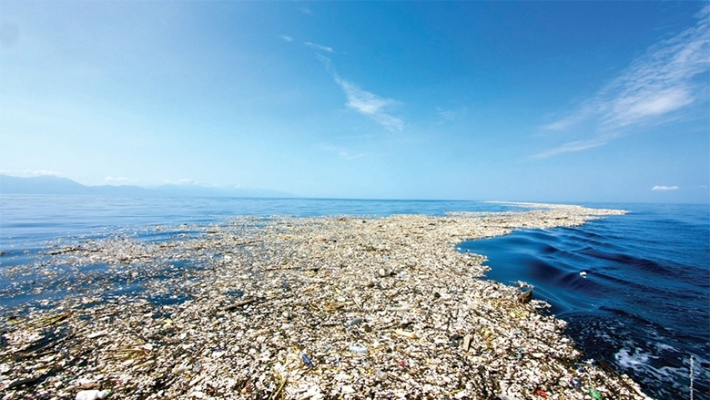
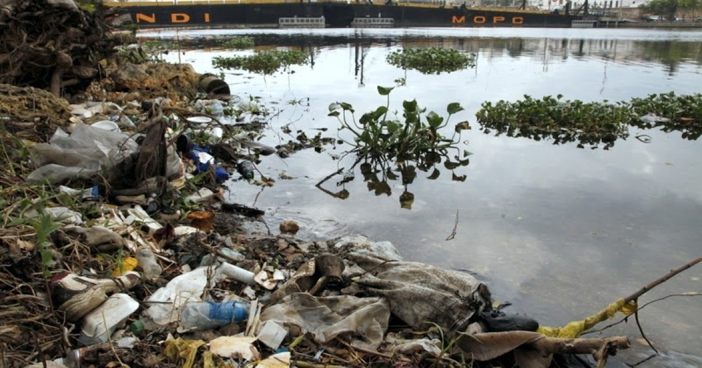
Problemática ambiental abordada
¿Qué denuncia? • ¿a quién afecta? • consecuencias
¿Qué problema ambiental denuncia el poema?
El poema denuncia la contaminación del mar por sustancias tóxicas, petróleo y residuos.
¿A quién afecta?
- Fauna marina
- Personas que consumen pescado
- Comunidades costeras
¿Cuáles son sus consecuencias?
- Muerte de especies marinas
- Contaminación de alimentos
- Daños ambientales y económicos
Acciones concretas
Estas acciones ayudan a reducir la contaminación y a proteger el agua.
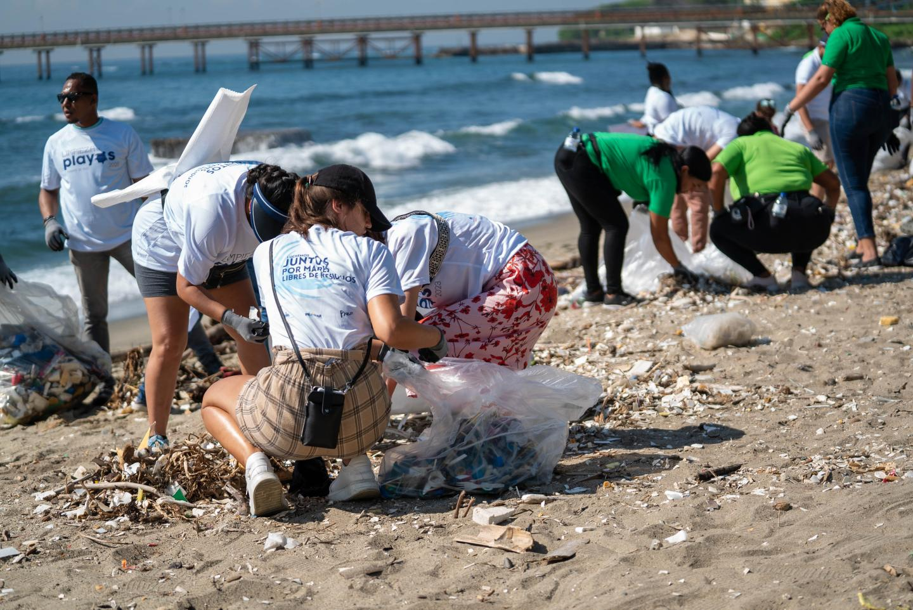
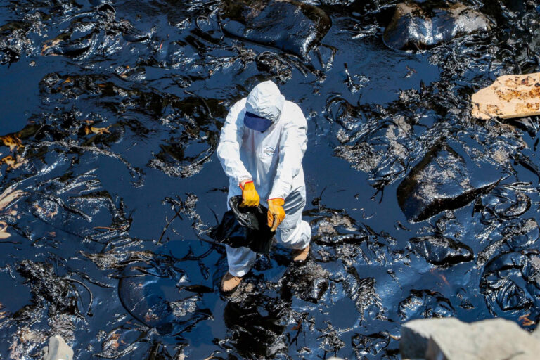
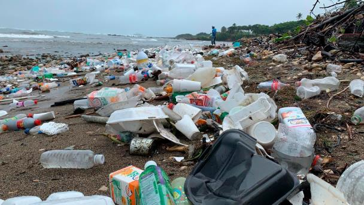
Análisis literario
Tema • Mensaje • Recursos literarios • Fragmentos destacados
Tema central
La destrucción del mar causada por la contaminación humana.
Mensaje del poema
El poema advierte que el ser humano está dañando el océano y que ese daño vuelve como problema social y ambiental.
Recursos literarios
- Enumeración: El poema menciona varias sustancias tóxicas para mostrar la gravedad de la contaminación. Ejemplo: “Plomo, cobre, mercurio, cianuro”.
- Imagen sensorial: Describe visualmente los daños causados por el petróleo en el mar.
- Tono denunciatorio: El lenguaje del poema critica directamente la destrucción del océano causada por el ser humano.
“Zarpa y verás los grumos de petróleo que han empedrado sus senderos.”
“Hoy al matarlo estamos muriendo.”
“Cuando haya muerto el mar no tendremos oxígeno.”
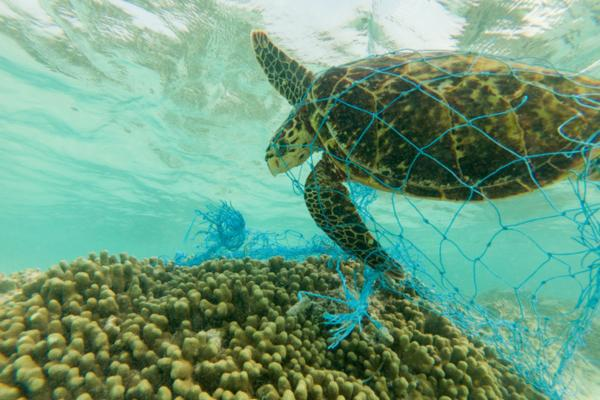
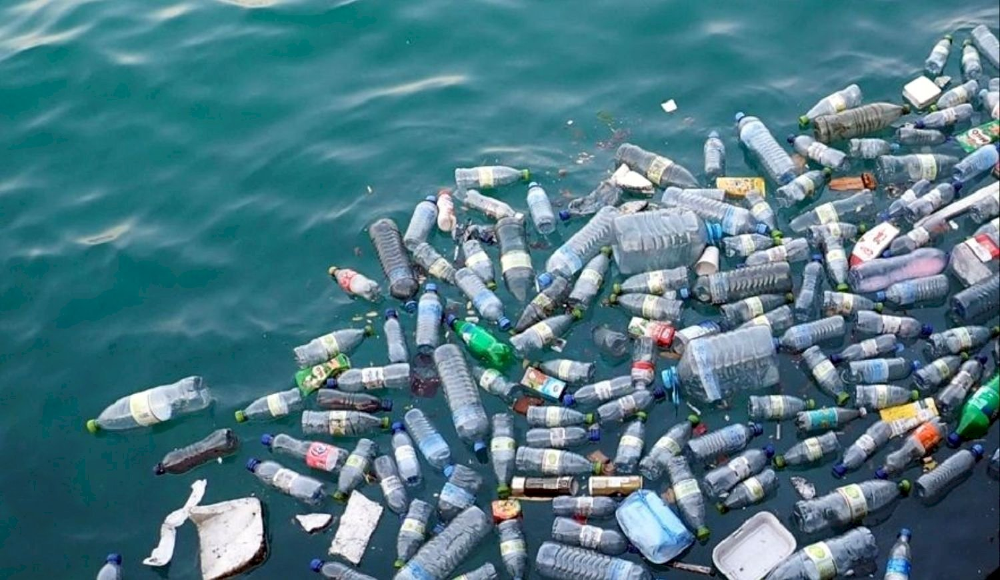
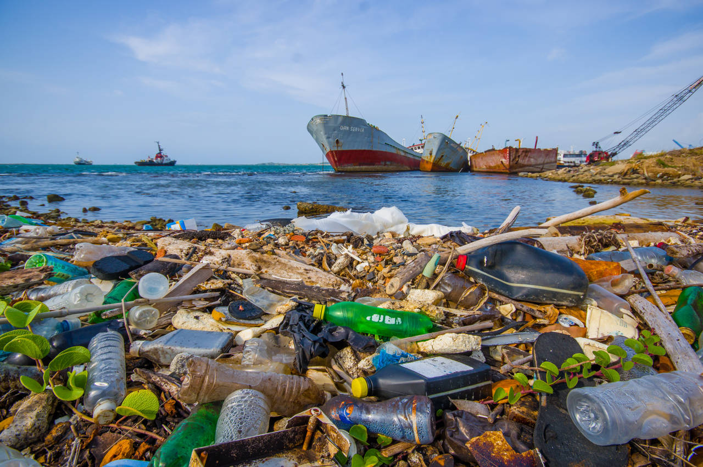
Interpretación personal
Opinión • Comunidad • Reflexión
Opinión crítica
Liz Marian: El poema muestra cómo la contaminación afecta al mar y también a la vida humana. Nos hace reflexionar sobre la responsabilidad que tenemos como sociedad para proteger los ecosistemas.
Shiara: El texto enseña que las acciones humanas pueden destruir los ecosistemas cuando no se actúa con conciencia ambiental. También invita a reflexionar sobre nuestras decisiones diarias.
Joelizsa: Este poema es un llamado a cuidar el medio ambiente y reducir la contaminación. Nos recuerda que el mar es una fuente de vida que debemos proteger.
Relación con la comunidad
En nuestra comunidad también se observan problemas de contaminación, como basura en calles, cañadas y ríos. Estos residuos pueden llegar al mar y afectar los ecosistemas y la salud de las personas.
Reflexión social
Cuidar el medio ambiente es una responsabilidad colectiva. Pequeñas acciones como reducir la basura, reciclar y proteger los recursos naturales pueden ayudar a preservar el mar para las futuras generaciones.
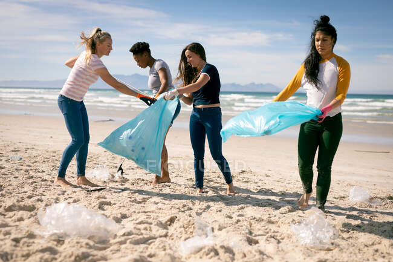
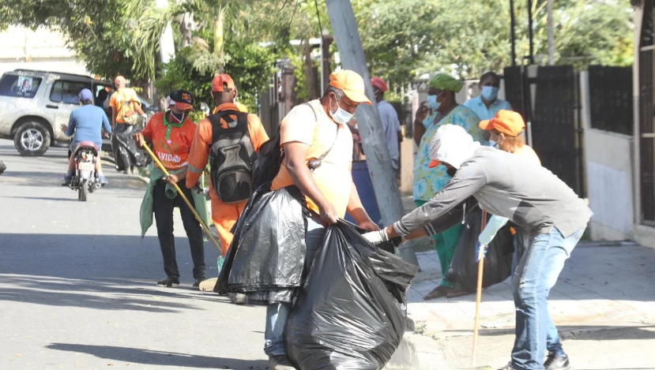
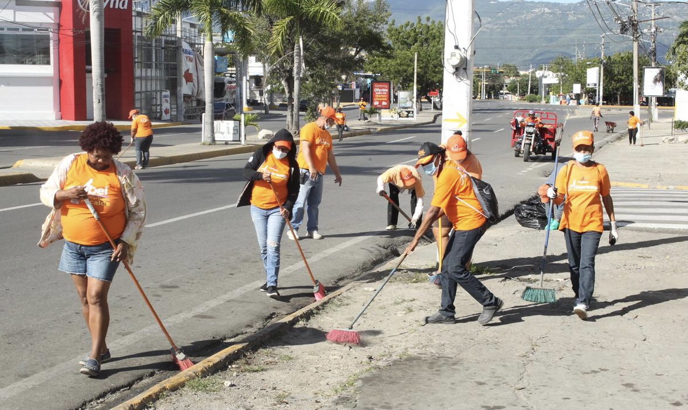